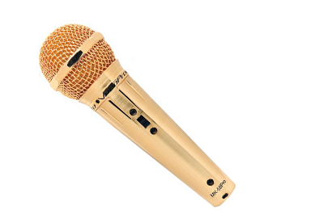

Cat Scratchers
736 S Jackson St Louisville, KY 40203 (502) 584-3424
Products
|
About Us
|
Frequently Asked Questions
|
Contact Us
|
Shopping Cart

Gold Microphone (VocoPro MK-58 Pro)
$59.00
Description:
Two Turntables but no microphone?
Specs:
Gold Finish!
Sensitivity: -53 dB
Frequency response: 20-12500Hz
Impedance: 500 ohms
Includes a Pro Mic Carrying Case and Holder